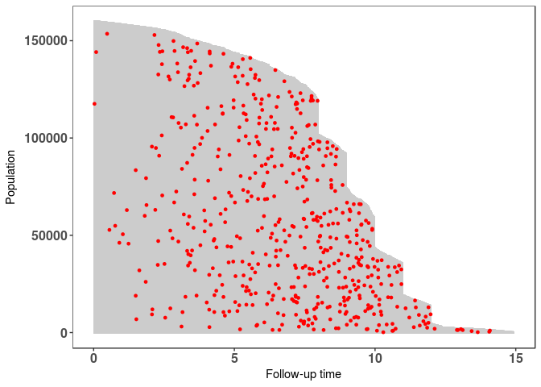
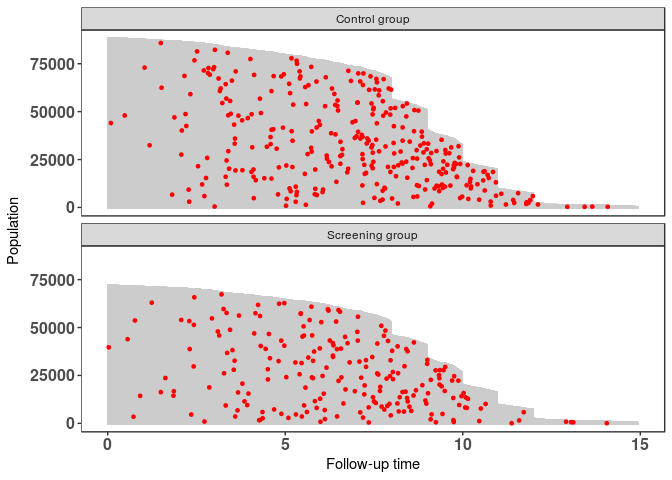
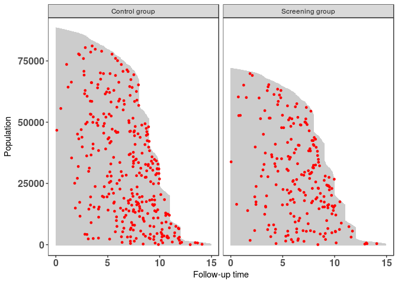
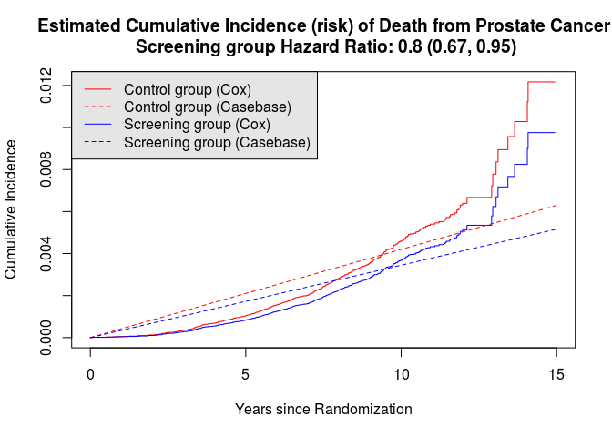
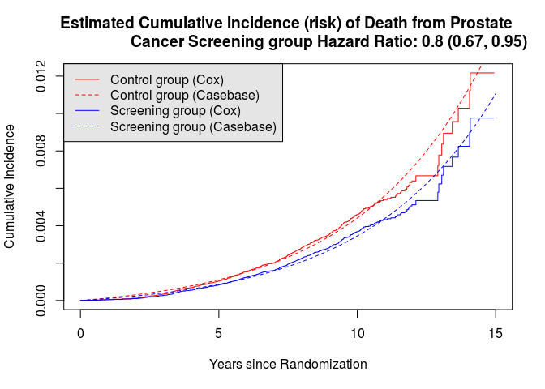
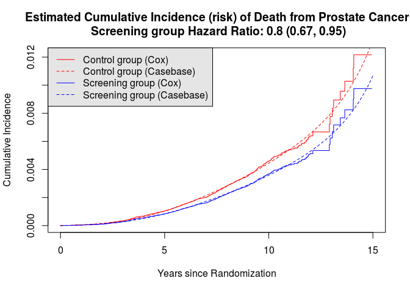

Introduction
casebase: An Alternative Framework for Survival Analysis¶
This vignette introduces the main functions in the casebase package.
The methods implemented in this package are based on the theory
developped in Fitting Smooth-in-Time Prognostic Risk Functions via
Logistic Regression (Hanley and Miettinen,
2009).
The motivation for this work is nicely summarised by Cox:

The purpose of the casebase package is to provide practitioners with
an easy-to-use software tool to predict the risk (or cumulative
incidence (CI)) of an event, for a particular patient. The following
points should be noted:
- Time matching/risk set sampling (including Cox partial likelihood) eliminates the baseline hazard from the likelihood expression for the hazard ratios
- If, however, the absolute risks are of interest, they have to be recovered using the semi-parametric Breslow estimator
- Alternative approaches for fitting flexible hazard models for estimating absolute risks, not requiring this two-step approach? Yes! Hanley and Miettinen, 2009
Hanley and Miettinen, 2009 propose a fully parametric hazard model that can be fit via logistic regression. From the fitted hazard function, cumulative incidence and, thus, risk functions of time, treatment and profile can be easily derived.
Cox Model vs. Case-base Sampling¶
In the following table we provide a comparison between the Cox model and case-base sampling:
Cox Case Base Sampling
model type semi-parametric fully parametric (logistic/multinomial regression)
time left hand side right hand side - allows flexible modeling of the equation of time
cumulative step function smooth-in-time curve incidence
non-proport interaction of handled directly by modeling time as a ional covariates with covariate hazards time
model make use of GLM framework (LRT, AIC, BIC) testing
competing difficult cause-specific cumulative incidence risks functions (CIFs) directly obtained via multinomial regression
| feature | Cox | Case.Base.Sampling |
|---|---|---|
| model type | semi-parametric | fully parametric (logistic/multinomial regression) |
| time | left hand side of the equation | right hand side - allows flexible modeling of time |
| cumulative incidence | step function | smooth-in-time curve |
| non-proportional hazards | interaction of covariates with time | handled directly by modeling time as a covariate |
| model testing | make use of GLM framework (LRT, AIC, BIC) | |
| competing risks | difficult | cause-specific cumulative incidence functions (CIFs) directly obtained via multinomial regression |
Load Required Packages¶
We fist install and load the required packages:
if (!requireNamespace("pacman", quietly = TRUE)) install.packages("pacman") pacman::p_load(survival) pacman::p_load(casebase) pacman::p_load(splines)
European Randomized Study of Prostate Cancer Screening Data¶
Throughout this vignette, we make use of the European Randomized Study
of Prostate Cancer Screening data which ships with the casebase
package:
data("ERSPC") head(ERSPC)
## ScrArm Follow.Up.Time DeadOfPrCa ## 1 1 0.0027 0 ## 2 1 0.0027 0 ## 3 1 0.0027 0 ## 4 0 0.0027 0 ## 5 0 0.0027 0 ## 6 0 0.0027 0
ERSPC$ScrArm <- factor(ERSPC$ScrArm, levels = c(0,1), labels = c("Control group", "Screening group"))
The results of this study were published by Schroder FH, et al. N Engl
J Med
2009.
There's a really interesting story on how this data was obtained. See
help(ERSPC) and Liu Z, Rich B, Hanley JA, Recovering the raw data
behind a non-parametric survival curve. Systematic Reviews
2014
for further details.
Population Time Plot¶
Population time plots can be extremely informative graphical displays of
survival data. They should be the first step in your exploratory data
analyses. We facilitate this task in the casebase package using the
popTime function. We first create the necessary dataset for producing
the population time plots:
pt_object <- casebase::popTime(ERSPC, event = "DeadOfPrCa")
## 'Follow.Up.Time' will be used as the time variable ## Sampling from all remaining individuals under study, ## regardless of event status
We can see its contents and its class:
head(pt_object)
## ScrArm time event original.time original.event event status ## 1: Screening group 0.0027 0 0.0027 0 censored ## 2: Screening group 0.0027 0 0.0027 0 censored ## 3: Screening group 0.0027 0 0.0027 0 censored ## 4: Control group 0.0027 0 0.0027 0 censored ## 5: Control group 0.0027 0 0.0027 0 censored ## 6: Control group 0.0027 0 0.0027 0 censored ## ycoord yc n_available ## 1: 159893 0 0 ## 2: 159892 0 0 ## 3: 159891 0 0 ## 4: 159890 0 0 ## 5: 159889 0 0 ## 6: 159888 0 0
class(pt_object)
## [1] "popTime" "data.table" "data.frame"
The casebase package has a plot method for objects of class
popTime and popTimeExposure:
plot(pt_object)

Can you explain the distinct shape of the grey area?
Exposure Stratified Population Time Plot¶
We can also create exposure stratified plots by specifying the
exposure argument in the popTime function:
pt_object_strat <- casebase::popTime(ERSPC, event = "DeadOfPrCa", exposure = "ScrArm")
## 'Follow.Up.Time' will be used as the time variable ## Sampling from all remaining individuals under study, ## regardless of event status ## Sampling from all remaining individuals under study, ## regardless of event status
We can see its contents and its class:
head(pt_object_strat)
## $data ## ScrArm time event original.time original.event ## 1: Control group 0.0027 0 0.0027 0 ## 2: Control group 0.0027 0 0.0027 0 ## 3: Control group 0.0027 0 0.0027 0 ## 4: Control group 0.0027 0 0.0027 0 ## 5: Control group 0.0137 0 0.0137 0 ## --- ## 159889: Screening group 14.9405 0 14.9405 0 ## 159890: Screening group 14.9405 0 14.9405 0 ## 159891: Screening group 14.9405 0 14.9405 0 ## 159892: Screening group 14.9405 0 14.9405 0 ## 159893: Screening group 14.9405 0 14.9405 0 ## event status ycoord yc n_available ## 1: censored 88232 0 0 ## 2: censored 88231 0 0 ## 3: censored 88230 0 0 ## 4: censored 88229 0 0 ## 5: censored 88228 0 0 ## --- ## 159889: censored 5 0 0 ## 159890: censored 4 0 0 ## 159891: censored 3 0 0 ## 159892: censored 2 0 0 ## 159893: censored 1 0 0 ## ## $exposure ## [1] "ScrArm"
class(pt_object_strat)
## [1] "popTimeExposure" "list"
The casebase package has a plot method for objects of class
popTime and popTimeExposure:
plot(pt_object_strat)

We can also plot them side-by-side using the ncol argument:
plot(pt_object_strat, ncol = 2)

Cox Model¶
We first fit a Cox model, examine the hazard ratio for the screening group (relative to the control group), and plot the cumulative incidence function (CIF).
cox_model <- survival::coxph( Surv(Follow.Up.Time, DeadOfPrCa) ~ ScrArm, data = ERSPC) (sum_cox_model <- summary(cox_model))
## Call: ## survival::coxph(formula = Surv(Follow.Up.Time, DeadOfPrCa) ~ ## ScrArm, data = ERSPC) ## ## n= 159893, number of events= 540 ## ## coef exp(coef) se(coef) z Pr(>|z|) ## ScrArmScreening group -0.222 0.801 0.088 -2.52 0.012 * ## --- ## Signif. codes: 0 '***' 0.001 '**' 0.01 '*' 0.05 '.' 0.1 ' ' 1 ## ## exp(coef) exp(-coef) lower .95 upper .95 ## ScrArmScreening group 0.801 1.25 0.674 0.952 ## ## Concordance= 0.519 (se = 0.011 ) ## Rsquare= 0 (max possible= 0.075 ) ## Likelihood ratio test= 6.45 on 1 df, p=0.0111 ## Wald test = 6.37 on 1 df, p=0.0116 ## Score (logrank) test = 6.39 on 1 df, p=0.0115
sum_cox_model$coefficients[,"exp(coef)"]
## [1] 0.8
We can plot the CIF for each group:
new_data <- data.frame(ScrArm = c("Control group", "Screening group"), ignore = 99) plot(survfit(cox_model, newdata=new_data), xlab = "Years since Randomization", ylab="Cumulative Incidence", fun = "event", xlim = c(0,15), conf.int = F, col = c("red","blue"), main = sprintf("Estimated Cumulative Incidence (risk) of Death from Prostate Cancer\n Screening group Hazard Ratio: %.2g (%.2g, %.2g)", sum_cox_model$conf.int[,"exp(coef)"], sum_cox_model$conf.int[,"lower .95"], sum_cox_model$conf.int[,"upper .95"])) legend("topleft", legend = c("Control group", "Screening group"), col = c("red","blue"), lty = c(1, 1), bg = "gray90")

Case-base Sampling¶
Next we fit several models using case-base sampling. The models we fit differ in how we choose to model time.
The fitSmoothHazard function provides an estimate of the hazard
function \( h(x, t) \) is the hazard function, \( t \) denotes the
numerical value (number of units) of a point in prognostic/prospective
time and \( x \) is the realization of the vector \( X \) of
variates based on the patient's profile and intervention (if any).
casebase_exponential <- casebase::fitSmoothHazard(DeadOfPrCa ~ ScrArm, data = ERSPC, ratio = 100, type = "uniform")
## 'Follow.Up.Time' will be used as the time variable
summary(casebase_exponential)
## ## Call: ## glm(formula = formula, family = binomial, data = sampleData) ## ## Deviance Residuals: ## Min 1Q Median 3Q Max ## -0.147 -0.147 -0.147 -0.133 3.077 ## ## Coefficients: ## Estimate Std. Error z value Pr(>|z|) ## (Intercept) -7.7691 0.0557 -139.52 <0.0000000000000002 *** ## ScrArmScreening group -0.2074 0.0884 -2.35 0.019 * ## --- ## Signif. codes: 0 '***' 0.001 '**' 0.01 '*' 0.05 '.' 0.1 ' ' 1 ## ## (Dispersion parameter for binomial family taken to be 1) ## ## Null deviance: 6059.0 on 54539 degrees of freedom ## Residual deviance: 6053.4 on 54538 degrees of freedom ## AIC: 6057 ## ## Number of Fisher Scoring iterations: 7
exp(casebase_exponential$coefficients[2])
## ScrArmScreening group ## 0.81
exp(confint(casebase_exponential)[2,])
## Waiting for profiling to be done... ## 2.5 % 97.5 % ## 0.68 0.97
The absoluteRisk function provides an estimate of the cumulative
incidence curves for a specific risk profile using the following
equation:
In the plot below, we overlay the estimated CIF from the casebase exponential model on the Cox model CIF:
smooth_risk_exp <- casebase::absoluteRisk(object = casebase_exponential, time = seq(0,15,0.1), newdata = new_data) plot(survfit(cox_model, newdata=new_data), xlab = "Years since Randomization", ylab="Cumulative Incidence", fun = "event", xlim = c(0,15), conf.int = F, col = c("red","blue"), main = sprintf("Estimated Cumulative Incidence (risk) of Death from Prostate Cancer\n Screening group Hazard Ratio: %.2g (%.2g, %.2g)", sum_cox_model$conf.int[,"exp(coef)"], sum_cox_model$conf.int[,"lower .95"], sum_cox_model$conf.int[,"upper .95"])) lines(seq(0,15,0.1), smooth_risk_exp[1,], type = "l", col = "red", lty = 2) lines(seq(0,15,0.1), smooth_risk_exp[2,], type = "l", col = "blue", lty = 2) legend("topleft", legend = c("Control group (Cox)","Control group (Casebase)", "Screening group (Cox)", "Screening group (Casebase)"), col = c("red","red", "blue","blue"), lty = c(1, 2, 1, 2), bg = "gray90")

Linear Time¶
casebase_time <- casebase::fitSmoothHazard(DeadOfPrCa ~ Follow.Up.Time + ScrArm, data = ERSPC, ratio = 100, type = "uniform")
## 'Follow.Up.Time' will be used as the time variable
summary(casebase_time)
## ## Call: ## glm(formula = formula, family = binomial, data = sampleData) ## ## Deviance Residuals: ## Min 1Q Median 3Q Max ## -0.385 -0.162 -0.123 -0.096 3.453 ## ## Coefficients: ## Estimate Std. Error z value Pr(>|z|) ## (Intercept) -9.0020 0.1114 -80.79 <0.0000000000000002 *** ## Follow.Up.Time 0.2149 0.0144 14.92 <0.0000000000000002 *** ## ScrArmScreening group -0.2135 0.0886 -2.41 0.016 * ## --- ## Signif. codes: 0 '***' 0.001 '**' 0.01 '*' 0.05 '.' 0.1 ' ' 1 ## ## (Dispersion parameter for binomial family taken to be 1) ## ## Null deviance: 6059.0 on 54539 degrees of freedom ## Residual deviance: 5824.7 on 54537 degrees of freedom ## AIC: 5831 ## ## Number of Fisher Scoring iterations: 8
exp(casebase_time$coefficients)
## (Intercept) Follow.Up.Time ScrArmScreening group ## 0.00012 1.23969 0.80778
exp(confint(casebase_time))
## Waiting for profiling to be done... ## 2.5 % 97.5 % ## (Intercept) 0.000099 0.00015 ## Follow.Up.Time 1.205296 1.27533 ## ScrArmScreening group 0.678221 0.96014
smooth_risk_time <- casebase::absoluteRisk(object = casebase_time, time = seq(0,15,0.1), newdata = new_data) plot(survfit(cox_model, newdata=new_data), xlab = "Years since Randomization", ylab="Cumulative Incidence", fun = "event", xlim = c(0,15), conf.int = F, col = c("red","blue"), main = sprintf("Estimated Cumulative Incidence (risk) of Death from Prostate Cancer\n Screening group Hazard Ratio: %.2g (%.2g, %.2g)", sum_cox_model$conf.int[,"exp(coef)"], sum_cox_model$conf.int[,"lower .95"], sum_cox_model$conf.int[,"upper .95"])) lines(seq(0,15,0.1), smooth_risk_time[1,], type = "l", col = "red", lty = 2) lines(seq(0,15,0.1), smooth_risk_time[2,], type = "l", col = "blue", lty = 2) legend("topleft", legend = c("Control group (Cox)","Control group (Casebase)", "Screening group (Cox)", "Screening group (Casebase)"), col = c("red","red", "blue","blue"), lty = c(1, 2, 1, 2), bg = "gray90")

Flexible time using BSplines¶
casebase_splines <- casebase::fitSmoothHazard(DeadOfPrCa ~ bs(Follow.Up.Time) + ScrArm, data = ERSPC, ratio = 100, type = "uniform")
## 'Follow.Up.Time' will be used as the time variable
summary(casebase_splines)
## ## Call: ## glm(formula = formula, family = binomial, data = sampleData) ## ## Deviance Residuals: ## Min 1Q Median 3Q Max ## -0.407 -0.173 -0.136 -0.084 3.808 ## ## Coefficients: ## Estimate Std. Error z value Pr(>|z|) ## (Intercept) -10.3115 0.3189 -32.34 < 0.0000000000000002 *** ## bs(Follow.Up.Time)1 4.4095 0.8051 5.48 0.000000043300 *** ## bs(Follow.Up.Time)2 2.0741 0.4776 4.34 0.000014089702 *** ## bs(Follow.Up.Time)3 4.6253 0.6991 6.62 0.000000000037 *** ## ScrArmScreening group -0.2163 0.0886 -2.44 0.015 * ## --- ## Signif. codes: 0 '***' 0.001 '**' 0.01 '*' 0.05 '.' 0.1 ' ' 1 ## ## (Dispersion parameter for binomial family taken to be 1) ## ## Null deviance: 6059.0 on 54539 degrees of freedom ## Residual deviance: 5786.8 on 54535 degrees of freedom ## AIC: 5797 ## ## Number of Fisher Scoring iterations: 9
exp(casebase_splines$coefficients)
## (Intercept) bs(Follow.Up.Time)1 bs(Follow.Up.Time)2 ## 0.000033 82.227113 7.957285 ## bs(Follow.Up.Time)3 ScrArmScreening group ## 102.036915 0.805526
exp(confint(casebase_splines))
## Waiting for profiling to be done... ## 2.5 % 97.5 % ## (Intercept) 0.000017 0.00006 ## bs(Follow.Up.Time)1 17.553644 413.72431 ## bs(Follow.Up.Time)2 3.212493 20.98132 ## bs(Follow.Up.Time)3 24.680482 386.35794 ## ScrArmScreening group 0.676338 0.95744
smooth_risk_splines <- casebase::absoluteRisk(object = casebase_splines, time = seq(0,15,0.1), newdata = new_data) plot(survfit(cox_model, newdata=new_data), xlab = "Years since Randomization", ylab="Cumulative Incidence", fun = "event", xlim = c(0,15), conf.int = F, col = c("red","blue"), main = sprintf("Estimated Cumulative Incidence (risk) of Death from Prostate Cancer\n Screening group Hazard Ratio: %.2g (%.2g, %.2g)", sum_cox_model$conf.int[,"exp(coef)"], sum_cox_model$conf.int[,"lower .95"], sum_cox_model$conf.int[,"upper .95"])) lines(seq(0,15,0.1), smooth_risk_splines[1,], type = "l", col = "red", lty = 2) lines(seq(0,15,0.1), smooth_risk_splines[2,], type = "l", col = "blue", lty = 2) legend("topleft", legend = c("Control group (Cox)","Control group (Casebase)", "Screening group (Cox)", "Screening group (Casebase)"), col = c("red","red", "blue","blue"), lty = c(1, 2, 1, 2), bg = "gray90")

Comparing Models Using Likelihood Ratio Test¶
anova(casebase_time, casebase_splines, test = "LRT")
## Analysis of Deviance Table ## ## Model 1: DeadOfPrCa ~ Follow.Up.Time + ScrArm + offset(offset) ## Model 2: DeadOfPrCa ~ bs(Follow.Up.Time) + ScrArm + offset(offset) ## Resid. Df Resid. Dev Df Deviance Pr(>Chi) ## 1 54537 5825 ## 2 54535 5787 2 37.9 0.000000006 *** ## --- ## Signif. codes: 0 '***' 0.001 '**' 0.01 '*' 0.05 '.' 0.1 ' ' 1
knitr::knit_exit()